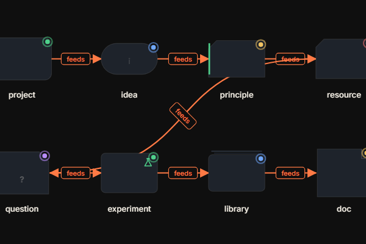
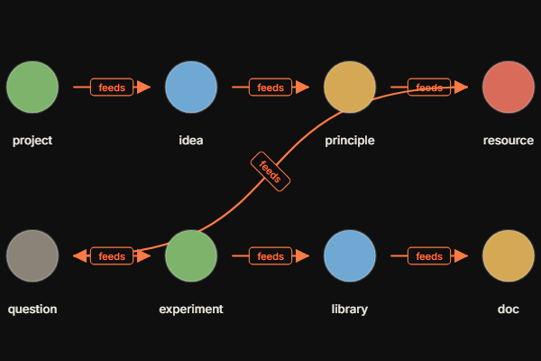

סוף מרדף ה-perf של Phase 4. בדוק על הקישורים למטה.
שלוש בדיקות, תשובה אחת: ה-tile cache, ה-culling, וכיבוי ה-filters — כולם null. ה-HUD הוכיח: commit 2.7ms (זול), paint 200ms (הבעיה). iOS מצייר מחדש את כל 88 הצורות בכל frame של תנועה.
התיקון: בזמן שאתה מזיז את הקנבס, כל צומת הופך לעיגול פשוט בצבע המצב שלו — זול לצייר. ברגע שאתה עוצר, הצורות העשירות חוזרות. אתה רואה את הפאר רק כשאתה קורא, לא כשאתה גורר.
בראש ה-HUD כתוב עכשיו build 4.3.0. כל קישור בדוח מציין גרסה — כך תדע מיד אם אתה על הבניין הנכון.
ההילה שפעמה ללא הפסקה על כל צומת — בוטלה. אין יותר שום אנימציה שרצה ברקע. הרעננות עדיין נראית (הילה בהירה יותר = טרי יותר), אבל סטטית, בלי תנועה.
עיגול מלא בצבע המצב + הכותרת, בלי צללית ובלי הילה — בדיוק כמו שתיארת שאתה מעדיף. זמין כמתג נפרד, שתוכל להשוות.


פתח כל קישור בנפרד על ה-iPad. בכל אחד: ודא שכתוב build 4.3.0 בראש ה-HUD, עשה pan עם אצבע אחת במשך 10–15 שניות, ותסתכל על השורה fps. אם היא מעל 50 — עבר.
תמלא את הטבלה ותחזיר לי:
| קישור | fps תוך כדי pan | worst | paint |
|---|---|---|---|
| א. baseline | ______ | ______ | ______ |
| ב. freeze (מומלץ) | ______ | ______ | ______ |
| ג. פשוט תמיד | ______ | ______ | ______ |
| ד. שניהם | ______ | ______ | ______ |
ה-brief תיאר "צילום" מדויק של המסך ל-bitmap והזזה שלו. זה לא אפשרי כאן: iOS Safari לא יודע לרסטר את שכבת ה-HTML (ה-.nslice overlay / foreignObject) ל-canvas, והפרויקט אוסר ספריות חיצוניות (כמו html2canvas). אז "צילום DOM" אמיתי חסום פה.
מה שכן עשיתי, ומשיג את אותה מטרה: גיליתי ש-render() כבר רץ בכל frame של pan (דרך CanvasTransform). אז במקום לצלם, הפכתי את ה-render הזה לזול — בזמן תנועה כל צומת מצויר כעיגול פשוט במקום צללית וקטורית. 88 עיגולים מציירים בשבריר מהזמן של 88 צלליות. במנוחה — הצורות העשירות חוזרות מיד.
בתנועה: עיגולים בצבע המצב (כמו בתמונה הימנית למעלה). ברגע שתעצור: הצורות העשירות חוזרות. במהירות גרירה אי אפשר להבחין בהבדל ממילא. אם מצב ב' (freeze) מגיע ל-50fps — Phase 4 נסגר. אם הוא משתפר אבל לא מספיק, מצב ג' (פשוט תמיד) נותן עוד מרווח, ואז נחליט.
7 בדיקות חדשות (sprint4_3_fixup.spec.ts) עוברות על desktop-chrome ו-ipad-chrome: דגלים, חותמת הגרסה, אין אנימציה, עיגול פשוט מול צללית, ו-freeze-pan שמחליף פשוט↔עשיר עם התנועה. החבילה המלאה עברה: 646 בדיקות (323 לכל מנוע) — אפס כשלים. דגלים כבויים = התנהגות זהה ל-4.2.
צדקת — הגיע הזמן להתקדם מהליטוש של אנימציות וצורות אל הליבה. ההילה, צורות הצמתים והקשתות קפואות כמו שהן. אחרי שתאמת ש-pan שמיש על Algo Execution, Phase 4 נסגר ואנחנו עוברים לפיצ'רים. איזה כיוון מדבר אליך?
תגיד לי מספר אחד (או תאר במילים שלך), ונצא לדרך.
הכול מאחורי דגלים כבויים כברירת מחדל. פתח את הקישורים, עשה pan, תחזיר את ה-fps. אם מצב ב' או ג' שמיש — Phase 4 נסגר ואנחנו עוברים לפיצ'רים. בחר כיוון מהרשימה למעלה. לא מתחיל אף אחד מהם לפני שתאמת ותבחר.
הערה: הצילומים הם desktop (להמחשה איך נראים המצבים). המספרים שלך מה-iPad הם שקובעים.